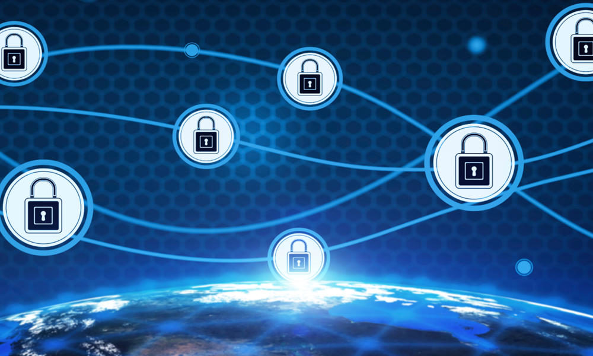

Aceptemos los hechos: es fácil olvidarse las contraseñas. Normalmente, las personas usan palabras sencillas, como
el nombre de una mascota o fechas fáciles de recordar, como un aniversario de bodas. Los hackers podrían probar
con su nombre, los nombres de sus hijos, las fechas de nacimiento y los nombres de mascotas como contraseñas
para acceder a su equipo. Cuando tienen suerte, pueden apropiarse de su Id., su privacidad y su seguridad
financiera.
Ahora es más importante que nunca usar contraseñas seguras. Los hackers buscan constantemente contraseñas, ya que
tienen un valor económico considerable. Las brechas de datos y las filtraciones de contraseñas dejan a cientos
de cuentas vulnerables para que los cibercriminales accedan a ellas. Con la autenticación de dos factores (2FA),
obtiene una capa de seguridad adicional a la cual los hackers no pueden acceder con facilidad, ya que
necesitarán más información además de las credenciales de nombre de usuario y contraseña. Actualmente, la está
usando y podría no ser consciente de ello. Su tarjeta para el cajero automático es un método 2FA que requiere su
tarjeta física y su número de PIN.
Aprenda más sobre el método 2FA y siga algunos consejos clave acerca de su contraseña para proteger los datos
confidenciales.
Método 2FA
2FA es un método para verificar su identidad que agrega un segundo factor de autenticación además de la
contraseña de su cuenta.
Algún dato que sepa: un número de PIN, una contraseña o un patrón.
Algún elemento que tenga: una tarjeta de débito o crédito, un teléfono móvil o un token de
seguridad, como un token USB o un llavero remoto.
Algún rasgo físico: identificación biométrica, como una huella de voz o huella digital.
¿Qué tan seguro es contra los hackers?
Nada es 100% seguro, y su cuenta todavía puede ser vulnerable ante los hackers debido a las opciones de
recuperación de contraseña. La recuperación de contraseña perdida normalmente restablece la contraseña por
correo electrónico y puede omitir completamente el método 2FA. Por lo tanto, si el atacante obtuvo acceso a la
cuenta de correo electrónico asociada con la cuenta para la cual usa 2FA, todavía será vulnerable. Asegúrese de
supervisar su cuenta de correo electrónico en busca de mensajes en los cuales se soliciten cambios de
contraseña.
Medidas de seguridad de contraseñas que debe adoptar
Use los siguientes consejos para crear contraseñas seguras:
Creación de una contraseña segura

No use información personal: Se recomienda firmemente que no incluya palabras relacionadas
con su nombre, nombres de familiares o mascotas en sus contraseñas. Tampoco incluya números fácilmente
reconocibles, como su dirección, número de teléfono o cumpleaños.
No use palabras que existan: Las herramientas para crackear contraseñas son muy eficaces y
ayudan a los atacantes a adivinar contraseñas. Estos programas pueden procesar todas las palabras del
diccionario, además de combinaciones de letras y números hasta que encuentran una coincidencia. Evite el uso
de palabras "reales" del diccionario o de nombres propios.
Mezcle caracteres: Combinar letras mayúsculas con minúsculas, números y caracteres
especiales, como "&" o "$", aumenta la complejidad de su contraseña y disminuye las posibilidades de que un
hacker ataque su sistema.
Cree contraseñas más largas: En general, se recomienda que las contraseñas tengan al menos
ocho caracteres. La probabilidad indica que es más difícil descifrar las contraseñas más largas.
Modifique frases fáciles de recordar: Un truco es utilizar una frase de paso, como una
estrofa de una canción o un dicho y, luego, usar la primera letra de cada palabra y sustituir algunas letras
por números. Por ejemplo: "que ciento volando" se convertiría en "q10oVoL@O".
Almacenamiento de contraseñas seguro
No las escriba: Resista la tentación de esconder contraseñas debajo del teclado o anotarlas
en un papel y pegarlo en el monitor. Las historias de hackers que obtuvieron contraseñas hurgando en los
cestos y espiando por encima de los hombros no son precisamente mitos.
Use una herramienta de administración de contraseñas: Un método para guardar y recordar
contraseñas de forma segura es utilizar una herramienta que guarde los nombres de usuario y las contraseñas
de forma cifrada. Algunas de estas herramientas incluso completarán la información requerida en algunos
sitios web automáticamente.
Administración y actualización de contraseñas
Cambie las contraseñas periódicamente: Las contraseñas de las cuentas financieras en línea
se deben cambiar cada uno o dos meses, y la de inicio de sesión del equipo, trimestralmente.
Use contraseñas diferentes para distintas cuentas: No se debe utilizar la misma contraseña
en más de una cuenta. Si un hacker la descubre, entonces toda la información protegida por esa contraseña
también estará en peligro.
No escriba contraseñas en equipos que no controla: Si usa su equipo portátil en una zona
activa de Wi-Fi o en un equipo en una cafetería con Internet, evite todas las acciones que requieran un
nombre de usuario y una contraseña (como operaciones bancarias en Internet o hacer compras), ya que sus
datos podrían ser interceptados mediante la red inalámbrica o con dispositivos de registro de pulsaciones de
teclado.
Protección adicional
Las contraseñas solo son una medida de protección. Para crear un entorno seguro en línea, también deberá usar un
firewall y otros productos de seguridad que ayuden a mantener a los hackers fuera de su sistema y mantengan su
identidad en línea protegida.